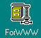
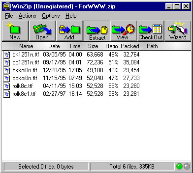
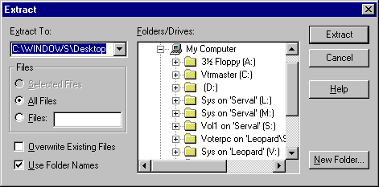

Page index / PC-MacRussian
Step Two
Step Two
Now unzip the file

sitting on your desktop by double-clicking on its icon.(If you don't have Winzip.exe, it can be downloaded for free at www.winzip.com).
When the screen below appears, click on the 'Extract' icon.

When the screen below appears, be sure that the white "Extract to:" box indicates saving the files to your desktop. Check the radio button for "All Files" and then click the "Extract" button.

You should now see on your desk top six new font icons: bk1251n.ttf, co1251n.ttf, bkkoi8n.ttf, cokoi8n.ttf, rolk8c.ttf and rolk8c1.ttf. Go now to the next step.
Previous Step || Next Step